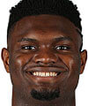
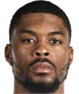

Estatura: 1,98
Peso: 129kg
Edad: 21 años
Años en la NBA: 2 años
Procedente de: Duke

Estatura: 2,01
Peso: 100kg
Edad: 24 años
Años en la NBA: 1 año
Procedente de: Xavier
Estatura: 2,01
Peso: 111kg
Edad: 29 años
Años en la NBA: 6 años
Procedente de: Wyoming
Estatura: 1,98
Peso: 102kg
Edad: 27 años
Años en la NBA: 3 años
Procedente de: Cincinnati